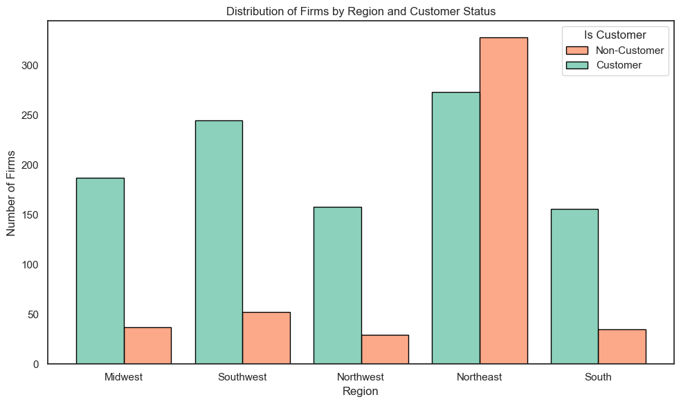

Poisson Regression Examples
Blueprinty Case Study
Introduction
Blueprinty is a small firm that makes software for developing blueprints specifically for submitting patent applications to the US patent office. Their marketing team would like to make the claim that patent applicants using Blueprinty’s software are more successful in getting their patent applications approved. Ideal data to study such an effect might include the success rate of patent applications before using Blueprinty’s software and after using it. Unfortunately, such data is not available.
However, Blueprinty has collected data on 1,500 mature (non-startup) engineering firms. The data include each firm’s number of patents awarded over the last 5 years, regional location, age since incorporation, and whether or not the firm uses Blueprinty’s software. The marketing team would like to use this data to make the claim that firms using Blueprinty’s software are more successful in getting their patent applications approved.
Data
This dataset contains information on 1,500 mature engineering firms and includes variables on patenting activity, geographic location, firm age, and Blueprinty software usage. The primary goal is to assess whether firms using Blueprinty’s software are more successful in obtaining patents.
Based on the bar chart comparing the average number of patents, we observe that Blueprinty customers have a higher average number of patents awarded over the past five years compared to non-customers. Specifically, customers average 4.13 patents, while non-customers average closer to 3.5 (3.47). This suggests that firms using Blueprinty’s software may be more successful in obtaining patents.
This conclusion is further supported by the histogram comparing the full distribution of patent counts across customer groups. The distribution for Blueprinty customers is visibly shifted to the right, indicating a greater concentration of firms with 4 or more patents. In contrast, non-customers are more heavily represented in the 0 to 2 patent range, with relatively fewer firms reaching the higher patent counts observed among customers. The histogram also shows a longer right tail for customers, with more firms reaching double-digit patent counts.
Taken together, both the difference in means and the shape of the distribution suggest that Blueprinty customers, on average, have higher patenting activity. However, it is important to note that this is a descriptive comparison. These differences may be influenced by other factors, such as firm age or geographic region, which are not yet accounted for in this analysis.

Blueprinty customers are not selected at random. It may be important to account for systematic differences in the age and regional location of customers vs non-customers.
When comparing company age by customer status, we observe that Blueprinty customers are slightly older than non-customers. On average, customer firms have been incorporated for about 26.9 years, while non-customers average 26.1 years. Although the difference is small, it may suggest that Blueprinty customers are marginally more established or experienced.
Regional differences, however, are much more pronounced. In the Northeast, more than 54% of firms are Blueprinty customers, making it the only region where customers outnumber non-customers. In all other regions—such as the Midwest, South, Southwest, and Northwest—Blueprinty customers represent less than 20% of firms. This shows that Blueprinty has a particularly strong presence in the Northeast, while adoption is much lower in other parts of the country.

These observations highlight important systematic differences between customers and non-customers. Since customer status is not randomly assigned, it’s essential to account for age and regional factors when evaluating the effect of Blueprinty software on patent outcomes.
Estimation of Simple Poisson Model
Since our outcome variable of interest can only be small integer values per a set unit of time, we can use a Poisson density to model the number of patents awarded to each engineering firm over the last 5 years. We start by estimating a simple Poisson model via Maximum Likelihood.
Given that \(Y \sim \text{Poisson}(\lambda)\), the likelihood function is:
\[ L(\lambda \mid Y) = \prod_{i=1}^n \frac{e^{-\lambda} \lambda^{Y_i}}{Y_i!} \]
Taking logs, the log-likelihood function becomes:
\[ \ell(\lambda) = \sum_{i=1}^n \left[ -\lambda + Y_i \log(\lambda) - \log(Y_i!) \right] \]
import numpy as np
import matplotlib.pyplot as plt
from scipy.special import gammaln # log(y!) for numerical stability
def poisson_loglikelihood(lmbda, Y):
if lmbda <= 0:
return -np.inf # log likelihood is undefined for λ <= 0
return np.sum(-lmbda + Y * np.log(lmbda) - gammaln(Y + 1))
lambda_vals = np.linspace(0.1, 10, 200)
loglik_vals = [poisson_loglikelihood(lmbda, Y) for lmbda in lambda_vals]
plt.figure(figsize=(8, 5))
plt.plot(lambda_vals, loglik_vals, color='darkblue')
plt.title("Log-Likelihood of Poisson Model")
plt.xlabel("Lambda (λ)")
plt.ylabel("Log-Likelihood")
plt.axvline(np.mean(Y), color='red', linestyle='--', label='Mean of Y')
plt.legend()
plt.tight_layout()
plt.show()Let’s consider the log-likelihood of a Poisson model where \(Y_i \sim \text{Poisson}(\lambda)\):
\[ \ell(\lambda) = \sum_{i=1}^{n} \left( -\lambda + Y_i \log(\lambda) - \log(Y_i!) \right) \]
Taking the first derivative with respect to \(\lambda\):
\[ \frac{d\ell(\lambda)}{d\lambda} = \sum_{i=1}^n \left( -1 + \frac{Y_i}{\lambda} \right) = -n + \frac{1}{\lambda} \sum_{i=1}^n Y_i \]
Setting the derivative equal to zero to find the maximum likelihood estimate (MLE):
\[ -n + \frac{1}{\lambda} \sum_{i=1}^n Y_i = 0 \]
Solve for \(\lambda\):
\[ \lambda_{\text{MLE}} = \frac{1}{n} \sum_{i=1}^n Y_i = \bar{Y} \]
Thus, the MLE for \(\lambda\) is simply the sample mean of \(Y\), which intuitively makes sense since the Poisson distribution has its mean equal to \(\lambda\).
We used numerical optimization to estimate the maximum likelihood value of λ in the Poisson model. The result, λ̂ = 3.6847, matches exactly with the sample mean of the observed data. This confirms our analytical result that the MLE of λ is simply the average of Y in a Poisson setting.
Estimation of Poisson Regression Model
Next, we extend our simple Poisson model to a Poisson Regression Model such that \(Y_i = \text{Poisson}(\lambda_i)\) where \(\lambda_i = \exp(X_i'\beta)\). The interpretation is that the success rate of patent awards is not constant across all firms (\(\lambda\)) but rather is a function of firm characteristics \(X_i\). Specifically, we will use the covariates age, age squared, region, and whether the firm is a customer of Blueprinty.
\[ Y_i \sim \text{Poisson}(\lambda_i), \quad \text{where} \quad \lambda_i = \exp(X_i^\top \beta) \]
This ensures that \(\lambda_i > 0\) for all \(i\). The log-likelihood function for this model is:
\[ \ell(\beta) = \sum_{i=1}^n \left( -\lambda_i + Y_i \log(\lambda_i) - \log(Y_i!) \right) = \sum_{i=1}^n \left( -\exp(X_i^\top \beta) + Y_i X_i^\top \beta - \log(Y_i!) \right) \]
We now implement this in Python.
Code: Poisson Log-Likelihood Function with Covariates
import numpy as np
import pandas as pd
from scipy.special import gammaln
# Feature engineering
df["age_scaled"] = df["age"] / 10
df["age_sq_scaled"] = (df["age"] ** 2) / 100
# Construct design matrix X
region_dummies = pd.get_dummies(df["region"], drop_first=True)
X = pd.concat([
pd.Series(1, index=df.index, name="intercept"),
df[["age_scaled", "age_sq_scaled", "iscustomer"]],
region_dummies
], axis=1)
X_matrix = X.values
Y = df["patents"].valuesI estimated a Poisson regression model where the number of patents is modeled as a function of firm age (scaled), age squared, customer status, and regional dummy variables. The fitted coefficients and their standard errors are shown in the table below:
| Variable | Coefficient | Std. Error |
|---|---|---|
| Intercept | -0.509 | 0.183 |
| Age (scaled) | 1.486 | 0.139 |
| Age² (scaled) | -0.297 | 0.026 |
| IsCustomer | 0.208 | 0.031 |
| Northeast | 0.029 | 0.044 |
| Northwest | -0.018 | 0.054 |
| South | 0.057 | 0.053 |
| Southwest | 0.051 | 0.047 |
Model Validation Using sm.GLM()
To validate our MLE results, I also fit the same Poisson regression model using Python’s statsmodels.api.GLM() function. The results closely match the custom optimization estimates, confirming the consistency and correctness of the likelihood-based approach.
The iscustomer coefficient is positive and statistically significant. Since the model uses a log link, we interpret the coefficient of 0.208 as follows:
Firms using Blueprinty are expected to have approximately 23% more patents, all else equal, since \(e^{0.208} \approx 1.231\).
This suggests that using Blueprinty’s software is associated with increased patent success.
In addition, the model suggests that company age has a positive effect on patenting up to a point (since the coefficient for age_scaled is positive), but the negative coefficient on age_sq_scaled indicates diminishing returns as firms get older. Regional effects appear small and are not statistically significant.
Overall, the model supports the hypothesis that using Blueprinty’s software is associated with higher patenting activity, even after controlling for age and region.
Counterfactual Analysis: What if Every Firm Used Blueprinty?
To better interpret the practical effect of Blueprinty’s software on patenting outcomes, I simulate a counterfactual scenario. We use our estimated Poisson regression model to compare predicted outcomes for each firm under two conditions:
- Scenario 1 (
X_0): All firms are treated as non-customers (iscustomer = 0) - Scenario 2 (
X_1): All firms are treated as Blueprinty customers (iscustomer = 1)
I then compute the expected number of patents under each condition and take the average difference.
Based on our counterfactual simulation using the estimated Poisson regression model, firms that use Blueprinty are predicted to receive 0.79 more patents, on average, over a five-year period compared to if they did not use the software.

This effect holds after controlling for firm age and regional differences, suggesting that Blueprinty’s software is associated with a meaningful increase in patenting success.
AirBnB Case Study
Introduction
AirBnB is a popular platform for booking short-term rentals. In March 2017, students Annika Awad, Evan Lebo, and Anna Linden scraped of 40,000 Airbnb listings from New York City. The data include the following variables:
Exploratory Data Analysis
- The distribution of the number of reviews is highly right-skewed, with most listings receiving fewer than 20 reviews.
- Listings that are instant bookable appear to have more reviews, based on a comparison of medians in the boxplot.

Data Cleaning
- Dropped listings with missing values in any relevant modeling variable.
- Converted
instant_bookableto a binary variable (1 for ‘t’, 0 for ‘f’). - Encoded
room_typeas dummy variables, using “Entire home/apt” as the reference category.
Poisson Regression Model
I used the following covariates to explain variation in the number of reviews: - bathrooms, bedrooms, price - review_scores_cleanliness, review_scores_location, review_scores_value - instant_bookable (binary) - room_type_Private_room, room_type_Shared_room (dummies)
Variable Interpretations
The estimated model is:
| Variable | Coefficient | Interpretation |
|---|---|---|
| Intercept | 3.572 | The baseline log expected number of reviews for a reference listing |
| bathrooms | -0.124 | Each additional bathroom is associated with a ~11.6% decrease in expected reviews: \(e^{-0.124} \approx 0.883\) |
| bedrooms | +0.075 | Each additional bedroom is associated with ~7.8% increase in reviews: \(e^{0.075} \approx 1.078\) |
| price | -0.000014 | The effect is small and negative; more expensive listings receive slightly fewer reviews |
| review_scores_cleanliness | +0.113 | A one-point increase in cleanliness score leads to ~12% more reviews: \(e^{0.113} \approx 1.12\) |
| review_scores_location | -0.077 | A higher location score is associated with slightly fewer reviews; possible saturation in popular areas |
| review_scores_value | -0.092 | Higher value scores correspond to fewer reviews; possibly reflects different guest expectations |
| instant_bookable | +0.334 | Instant booking listings receive ~40% more reviews: \(e^{0.334} \approx 1.40\) |
| room_type_Private_room | -0.015 | Little difference from entire homes; slightly fewer reviews |
| room_type_Shared_room | -0.252 | Shared rooms get ~22% fewer reviews: \(e^{-0.252} \approx 0.78\) |
Summary
- The strongest positive driver of review volume is instant booking, which increases expected review counts by roughly 40%.
- Cleanliness and number of bedrooms are also positively associated with reviews.
- Shared rooms significantly underperform compared to entire homes.
- Price, location, and value scores show weak or negative associations, possibly due to nonlinear effects or omitted variables.
Because the model uses a log link, the effect of each variable is multiplicative. A coefficient \(\beta\) implies that the number of reviews changes by a factor of \(e^\beta\) for a one-unit increase in that variable, holding all others constant.